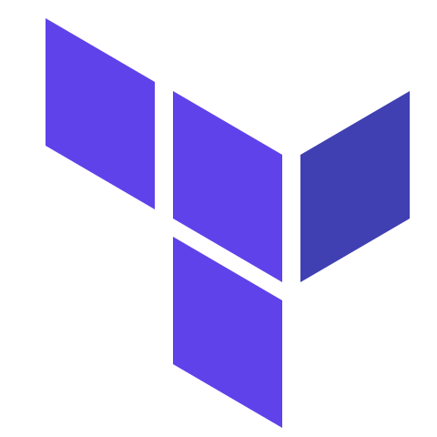
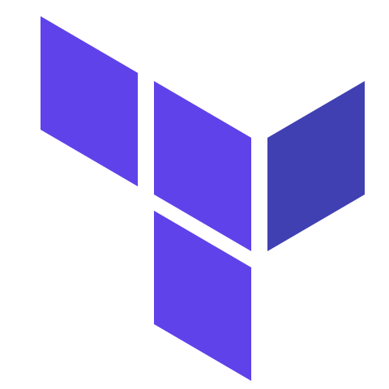

Work Experiences 💼
My working experiences are summarized below. During my employement journey, I have worked for companies in a variety of industries, including semiconductors, cruise, services, and consumer goods. I also had business travel opportunities to several EU and Asia nations.
-
.NET Software Engineer
2021 - Present | Ørsted , Malaysia
- Lead & Developed HPC ( High Performance Computing ) 2.0 frontend to perform job submission, running and monitoring task.
- Managed & maintained HPC Azure resources / services using Azure Batch, Azure Blob / File Share, and Azure Functions.
- Terraform implementation for CI / CD automated Azure resources creation.
- Involved in HPC API development using Python and C#.
- Involved in facilitated daily team meeting in Scrum / Safe methodology.
- Maintaining and enhancing HPC 1.0 frontend / backend.
-
Remote Full Stack Developer
2019 - 2021 | Resco System Ltd , UK
- Lead & developed cruise mustering web app.
- Involved in Xamarin Form UI development and backend enhancement for cruise check-in system.
- Refactored & enhanced reporting engine from client to server using Crystal Report.
- Involved in Azure CI / CD pipeline build setup for win / web app.
- Improved & maintained existing frontend & backend .NET win / web app.
-
Full Stack System Engineer
2014 - 2019 | Infineon Technologies , Malaysia
- Migrated and revamped ( framework upgrade, redesign and redevelop ) company asset web portal which enable the management of employee asset status ( asset transfer ownership, asset validation, loan asset etc. )
- Lead & developed survey web app for survey creation, collecting & analyse feedbacks.
- Lead & developed web portal to manage all production application link.
- Developed meeting room management web app for employee to book and manage meeting room.
- Administrated, maintained and customized team foundation server for developer's source code management.
- Improved & maintained existing frontend & backend .NET web app.
-
Software Engineer
2013 - 2014 | Open Integration Ptd Ltd , Singapore
- Developed RMS ( Recipe Management System ) for production machine to load recipe and produce chips.
- Developed new company website.
- Refactored & enhanced frontend for existing web app.
- Performed UAT for every new production machine using SECSGEMstandard.
- Supported and troubleshooted client production machine issue.
-
Jr. Software Engineer
2011 - 2013 | Samsung Electronic Display , Malaysia
- Developed MRO ( Maintenance Repair Operation ) web app for logistic quality & quantity control.
- Developed Goods Permit and Barcode win app for employee to register goods for exported from company.
- Developed several in-house web app for the management of employee leaves, OT and item claim.
- Developed calendar web app for department to update calendar event.


 
